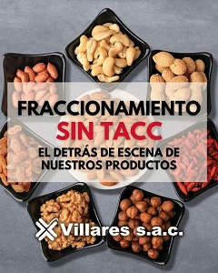
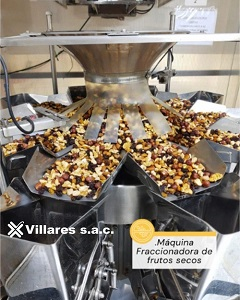

NOVEDADES
¡No Te Pierdas las Novedades Más Recientes!
LOGRAMOS CERTIFICAR NUESTRA PLANTA COMO PRODUCTORA SIN TACC
Luego de muchos esfuerzos para poder certificar la planta, en 2019 se iniciaron los trámites para obtener las habilitaciones necesarias para la producción-fraccionamiento de alimentos sin TACC. Finalmente en 2021 se realizaron los primeros registros de productos (RNPA) libres de gluten y, en agosto de ese mismo año, se comenzó con la primera producción Sin TACC.
SOMOS LA EMPRESA CON MAYOR VARIEDAD DE PRODUCTOS SIN TACC
Porque sabemos la calidad nutricional que aporta este grupo de alimentos, es que pusimos el foco en almendras, nueces, castañas de cajú, pistachos, pasas de uvas, banana chips y diferentes mixes de frutos secos. Para que con ellos tengan desayunos, meriendas y snacks saludables, harinas de frutos secos y tantos otros usos que se le pueden dar.
¡No te pierdas las Últimas Noticias!
Entrevista al Director de New Garden.
En esta entrevista podrás conocer a nuestro director Luis Villares. Desde sus inicios en la empresa familiar hasta su labor diaria actual. Actualmente es director de New Garden, la división de venta minorista de Alimentos Villares, la compañía que su abuelo fundó en 1934.
Leer MásEntre las mejores dietéticas del país!
Fuimos escogidos entre un selecto grupo de dietéticas que se destacan por los servicios que ofrecen en términos de calidad y atención . Si vas a comprar a estos comercios seguro te llevas alguna receta o un buen consejo. Además, muchos ofrecen promociones.
Leer MásLlegó el endulzante Sirope de Dátil.
De la mano de Villares, llega a la Argentina este producto –único en el país- que contiene 100% del fruto en su composición. Un nuevo endulzante natural, proteico, sano y riquísimo. Conocé beneficios y las recetas que podes comenzar a practicar con este endulzante natural.
Leer Más